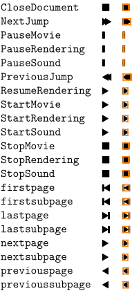
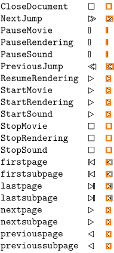
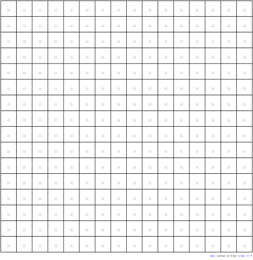

Contents
You can load the ConTeXt navigation symbols with
\usesymbols[nav]
There are several symbol sets defined. If you want the black symbol for lastpage (⇥), you can either load the whole navigation 1 symbol set first:
\setupsymbolset [navigation 1] \symbol [lastpage]
or use it as
\symbol[navigation 1][lastpage]
The font itself is included in ConTeXt.
Symbol sets
- 
- 
All glyphs
- 
See also
- source: symb-nav.mkii , symb-imp-nav.mkiv